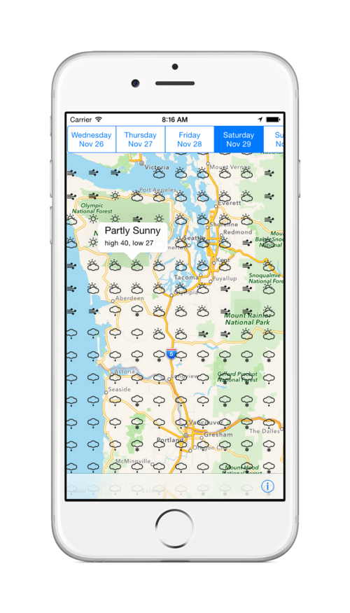

Weather Hunt for iOS
Weather Hunt allows you to quickly see the weather forecast for the exact microclimate you are interested in exploring. Pinch to zoom on any location in the USA and then tap to get the weather conditions for a particular location on a specific day.

Accurate Weather Technology
Weather Hunt uses data directly from the National Oceanic and Atmospheric Administration (NOAA) for the most up to date and accurate forecasts. You can see forecasts up to 7 days in advance for any location in the USA.
Optimized for Microclimates
Most weather apps provide you a weather forecast using a zip code or city. Weather patterns can differ drastically within even short distances. Weather Hunt allows you to pinpoint the exact location you want to get a forecast for.
Easy To Use
Weather Hunt was created to allow you to easily see a map of the weather without having to understand jet streams and barometric pressure. Just click on the map and get the forecast you are interested in.
Weather Hunt is available on the App Store now. Download this app on the App Store
Support or Contact
Having trouble with Weather Hunt? Have any feature requests? Feel free to to contact us at support@weatherhunt.com and we'll help sort things out.
Note: Weather Hunt is only available in the United States.